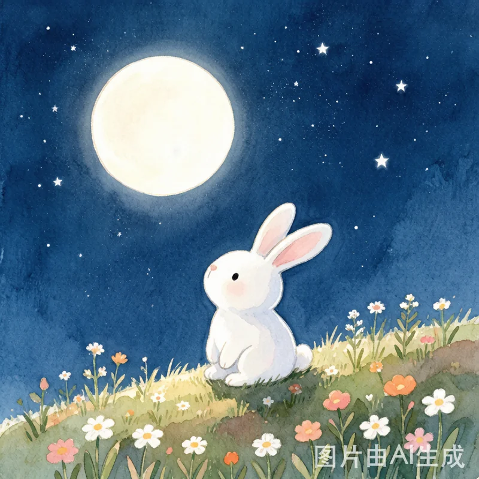
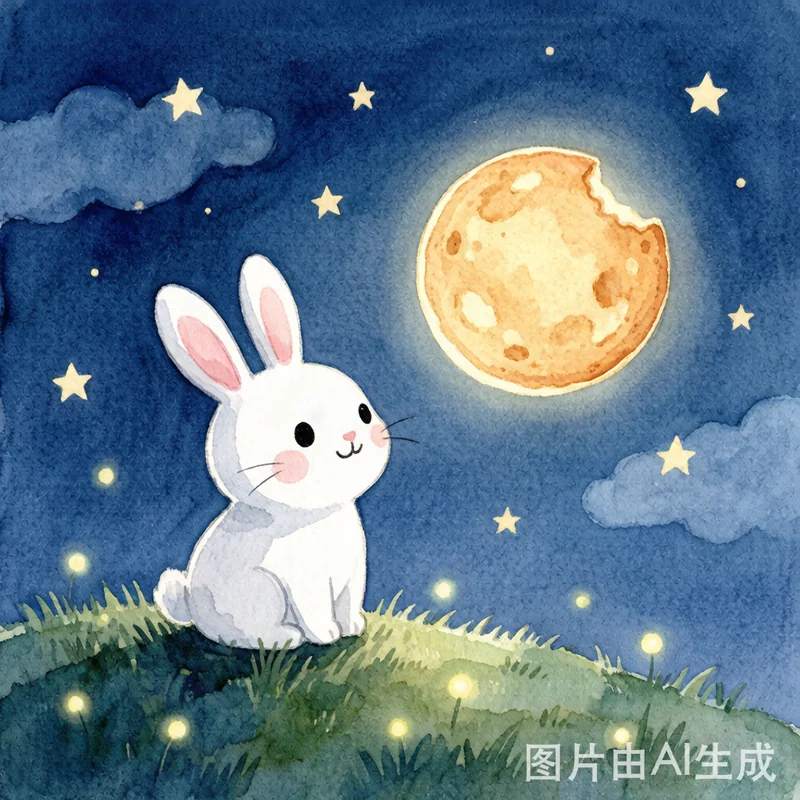
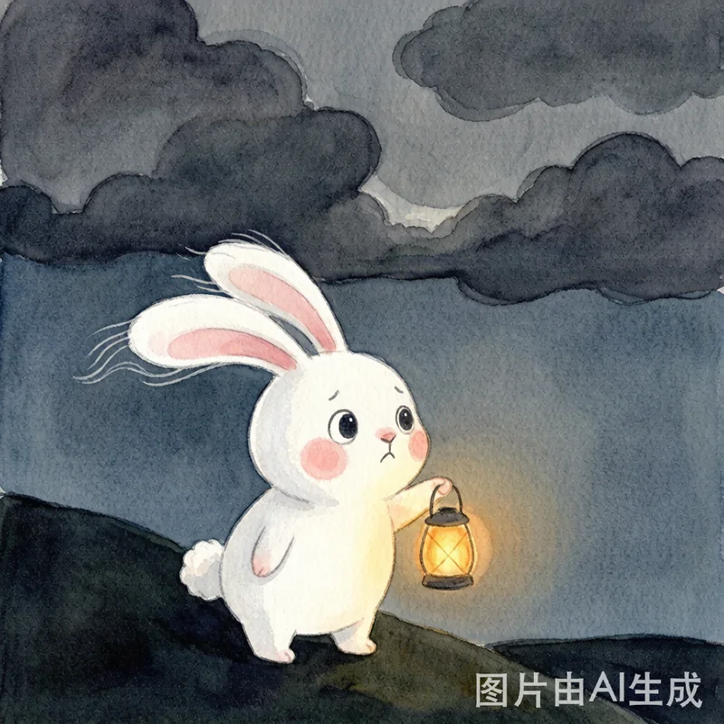
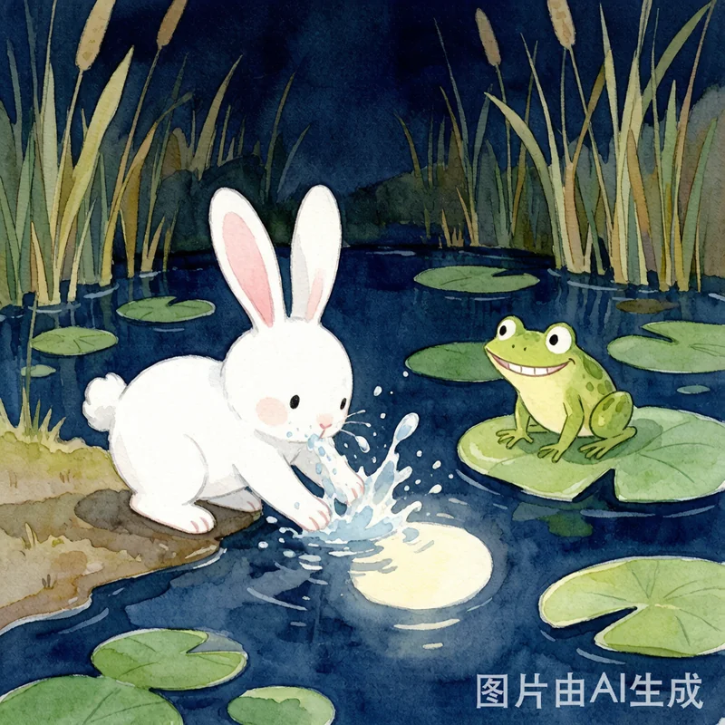
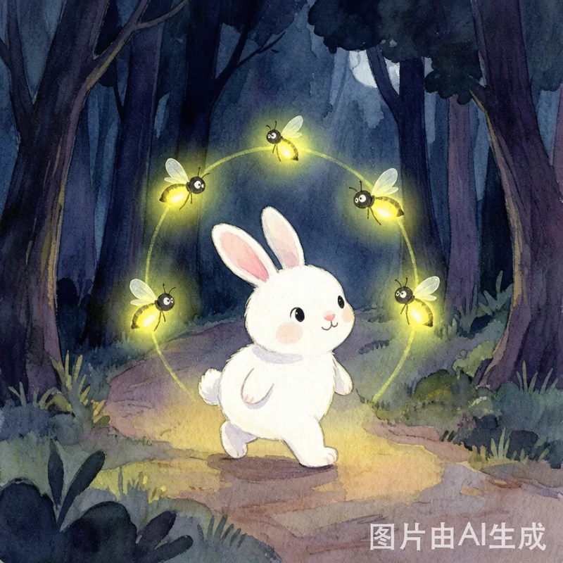
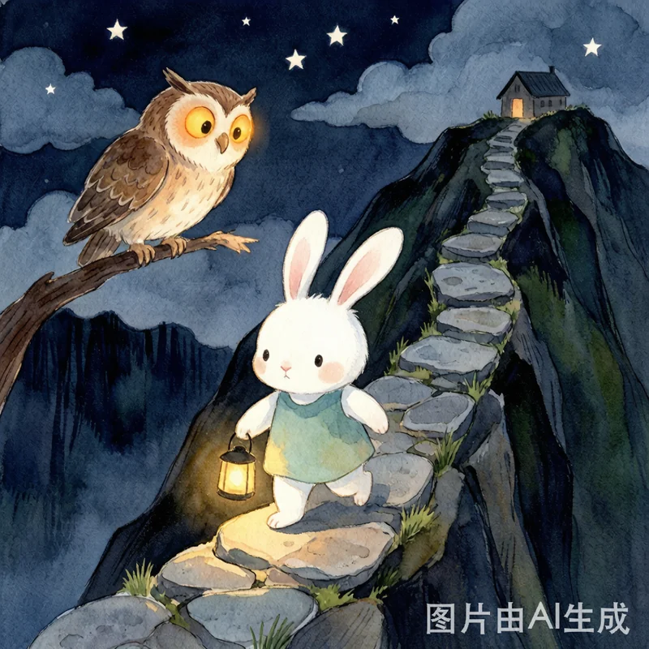
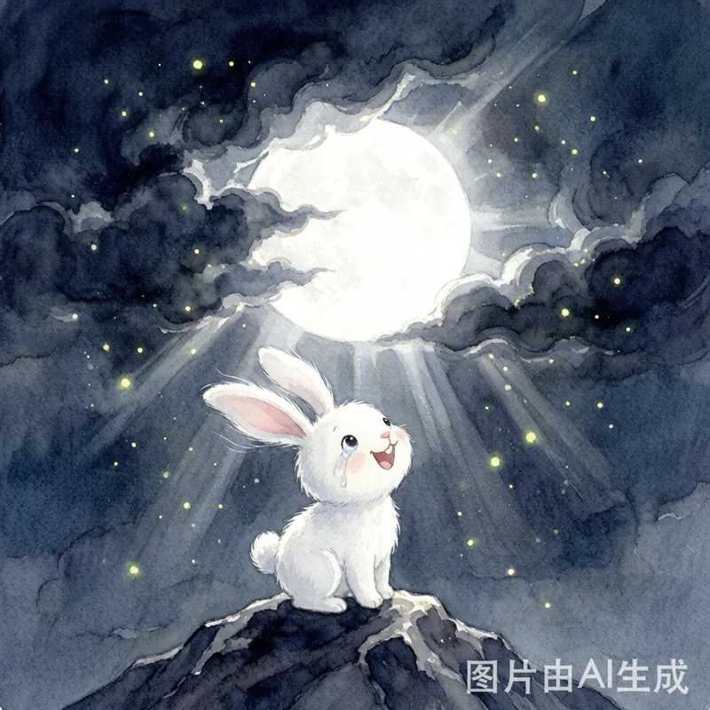
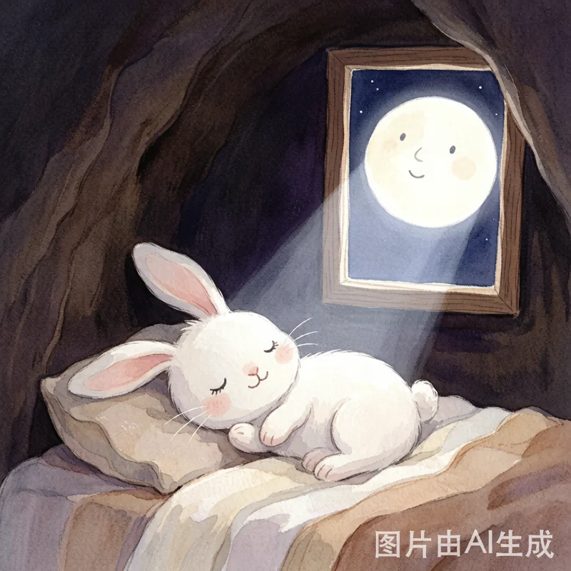

一场关于勇敢与坚持的旅行

在一片绿油油的草地边，住着一只叫月月的小兔子。月月有一对长长的耳朵，一双圆溜溜的眼睛，还有一身雪白雪白的毛。
月月最喜欢做的一件事，就是每天晚上坐在小山坡上，抬头看月亮。"月亮又圆又亮，像一块发光的饼干。"她觉得月亮是她的好朋友，每天晚上都会准时来陪她。

可是有一天晚上，天上黑乎乎的，只有几片厚厚的乌云，像一床灰色的被子，把天空盖得严严实实。月亮不见了！
"月亮去哪儿了？"月月急得耳朵都耷拉下来了。她等啊等，等了好久好久，月亮还是没有出来。
"不行，我要去找月亮！"月月带上一个小小的灯笼，出发了。

月月走啊走，来到了一个小池塘边。池塘边蹲着一只绿皮青蛙。"青蛙叔叔，你看见月亮了吗？"
青蛙歪着头说："我刚才好像看到她掉进池塘里了！你看——"月月低头一看，池塘里真的有一个圆圆的、亮亮的东西！可是她伸手一捞，水花溅了一脸。
"那是月亮的影子呀，小傻瓜。"青蛙笑了，"月亮不在水里，去别处找找吧。"

月月继续往前走。天越来越黑，路越来越难走。她的心怦怦跳，有点害怕，但她想起月亮圆圆的笑脸，咬咬牙，继续走。
这时，一闪一闪的小光点飞了过来——是萤火虫！"小兔子，这么晚你在做什么呀？"
"我在找月亮。"月月说。萤火虫想了想："远处那座大山顶上好像有光，也许月亮就在那里！"萤火虫们围成一圈，在前方为月月引路。有了它们，黑夜好像没那么可怕了。

月月开始爬山。山路又陡又滑，她的小脚丫好几次差点踩空。石头硌得脚疼，荆棘刮过她的毛，但她一直没有停下来。
爬到半山腰，一只猫头鹰从树上飞下来："小家伙，大半夜的爬山，你不怕吗？"
"我有一点怕，"月月老实地说，"但是月亮不见了，我要找到她。"猫头鹰笑了："你真勇敢。月亮其实一直在天上，只是被乌云挡住了。继续往上爬，山顶风大，也许能把乌云吹走。"

终于，月月爬到了山顶！风呼呼地吹，吹得她的长耳朵飘来飘去。月月闭上眼睛，深吸一口气，用力地吹——呼！
奇妙的事情发生了——山风好像听到了月月的呼唤，刮得更猛了。乌云开始一片一片散开，先是露出一条缝，然后缝隙越来越大……
突然，一束银白色的光从云缝里射了出来！月亮！又大又圆又亮，银色的光洒满了整个山顶。月月高兴得跳了起来，眼泪却止不住地流下来。

月月明白了——月亮从来没有离开过，只是暂时被乌云挡住了。就像有时候会遇到困难、会害怕，但只要勇敢地往前走，坚持不放弃，光总会重新照进来的。
回到家，月月钻进被窝，从窗口看出去，月亮正对着她笑呢。"晚安，月亮。"月月轻轻说。月亮的光轻轻闪了一下，好像在回答她。